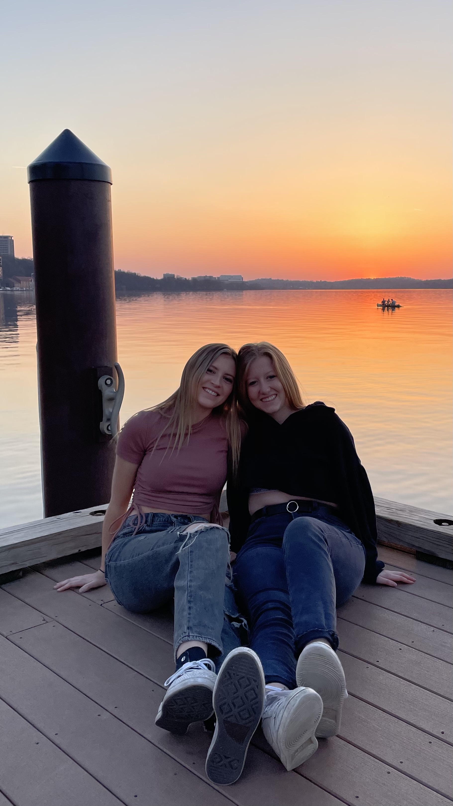
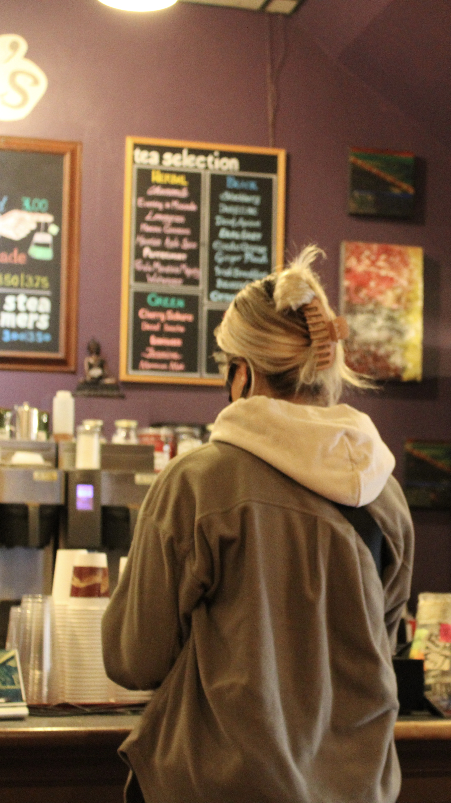

Badger AKPsi

Badger AKPsi is a professional business fraternity that I was inducted into in the Spring of 2020. AKPsi works to build brotherhood, help the community, and build our professional skills. Within AKPsi, I have been on Rush Committee and the Marketing Chair. These positions have allowed me to grow personally and work on my digital media skills. This organizatin has truly made UW-Madison feel like home!
UW-Madison

I have grown up in Madison, Wisconsin for my whole life so going to UW-Madison was a no brainer. This photo here represents my love for Lake Mendota, the beatiful campus, and the city as a whole. Madison has always had a very special place in my heart, and now as I create more memories each day, my love for the city only grows fonder.
Ad Club

While at UW-Madison, I am a part of the Ad Club. In Ad Club, we hear from speakers each week about the advertising industry and participate in a mock agency program. This year, my client is Michelangelo's Coffee House. For part of the project, my team and I did a photoshoot at Michelangelo's to get some content for their social media.